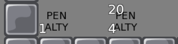

Tune Zones allow you to have different physics in each part of map (by HMH) (Tutorial, Example gravity.map, gravity.cfg (put it into data/maps right where your DDNet-Server binary is))
Tiles for Penalty Time on touch on Switch layer. Touch the tile and time is added to your game time: (left is 1 second, right is 20 minutes, 4 seconds)
